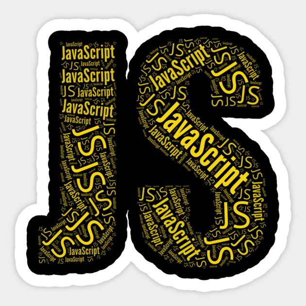

What is HTML?
- HTML stands for Hyper Text Markup Language
- HTML is the standard markup language for creating Web pages
- HTML describes the structure of a Web page
- HTML elements tell the browser how to display the content

What is CSS?
- CSS stands for Cascading Style Sheets
- CSS describes how HTML elements are to be displayed on screen, paper, or in other media
- CSS saves a lot of work. It can control the layout of multiple web pages all at once
- External stylesheets are stored in CSS files

What is JavaScript?
- JavaScript is the Programming Language for the Web.
- JavaScript can update and change both HTML and CSS.
- JavaScript can calculate, manipulate and validate data.
- Programmatic code which enchances functionality.